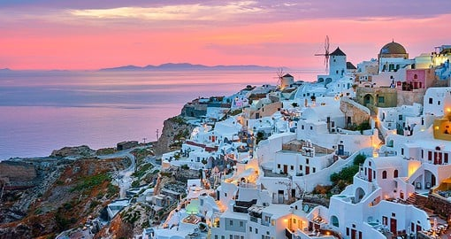
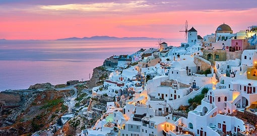
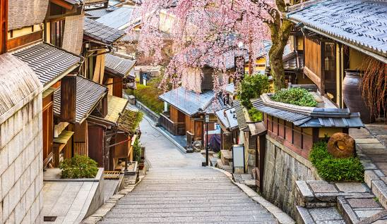
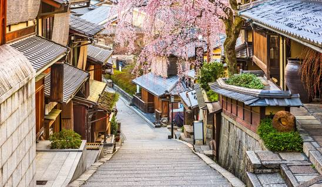
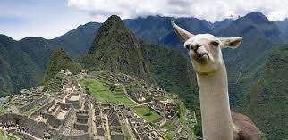
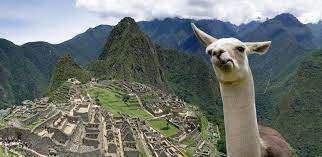

Goregous Getaways
Bora Bora, French Polynesia
Geographical Location: Oceania
Known for its stunning overwater bungalows and crystal-clear waters, Bora Bora is a tropical paradise in the South Pacific. The island's lush interior is adorned with tropical forests and rugged peaks, making it a paradise for hikers who seek adventure beyond its pristine beaches.
Santorini, Greece
Geographical Location: Europe
Santorini's unique volcanic landscape includes the famous Red Beach, where visitors can relax on crimson-hued sands and swim in the clear blue waters framed by dramatic red cliffs. The island's cuisine is a delight for food lovers, with its fresh seafood, traditional Greek dishes, and renowned local wines, best enjoyed at charming tavernas overlooking the caldera.
 



Kyoto, Japan
Geographical Location: Asia
The city is a treasure trove of cherry blossoms in spring, with thousands of sakura trees bursting into bloom. Kyoto's geisha culture is a captivating aspect of the city's heritage, and you can witness the artistry and elegance.
 

Machu Picchu, Peru
Geographical Location
Machu Picchu's intricate stone architecture and mysterious history have earned it the nickname "The Lost City of the Incas". The Inca Trail, a multi-day trek leading to Machu Picchu, offers not only a rewarding journey but also a chance to explore ancient ruins and amazing views.


 
